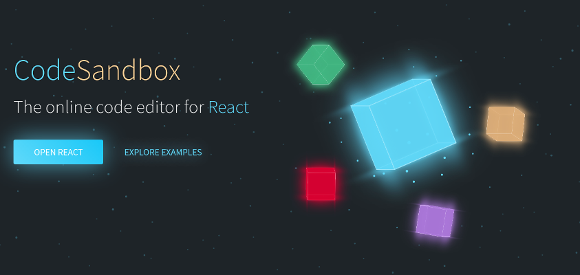
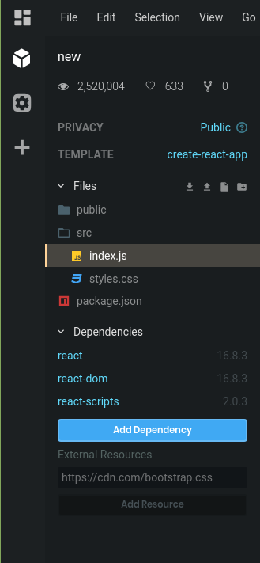
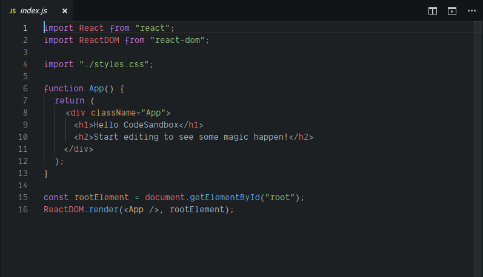
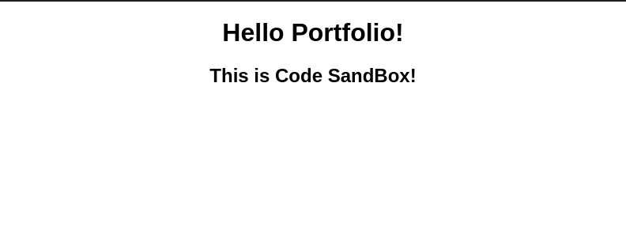
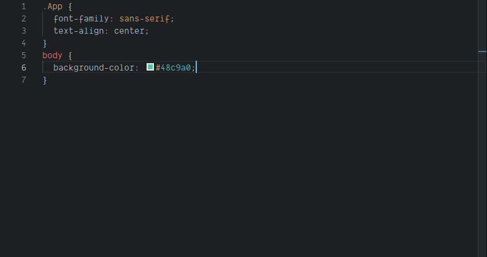
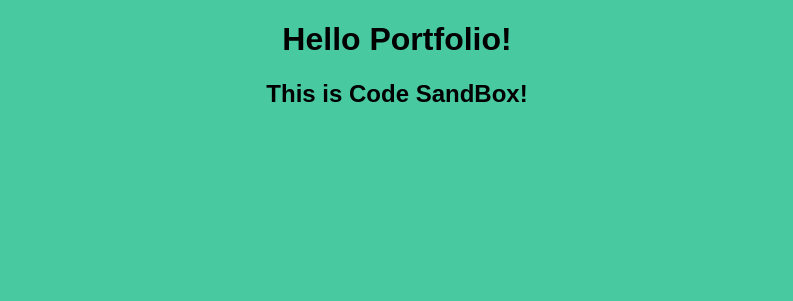

This is Code SandBox, an editor for different Javascript families which I used in order to learn React. |
 |
This is the file structure that comes with the brand new 'Sandbox' when I hit new. |
 |
This is the basic index.js file that comes pregenerated with the 'New Sandbox'. As you can see, it is written with React.js |
 |
Also in Code Sandbox, it has a built in visualizer in order to let you see what your webpages look like. |
 |
You can even change the css of the webpage! |
 |
Then the visualizer updates in real-time. |
 |